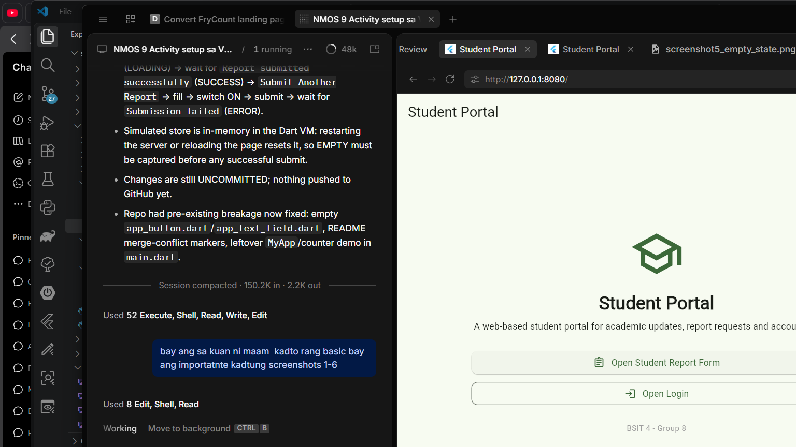
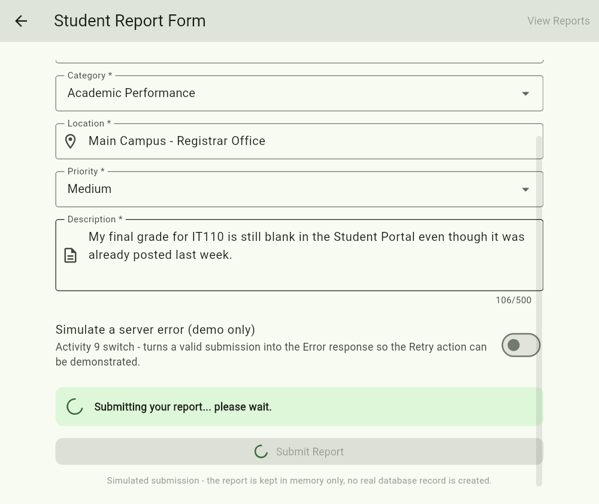
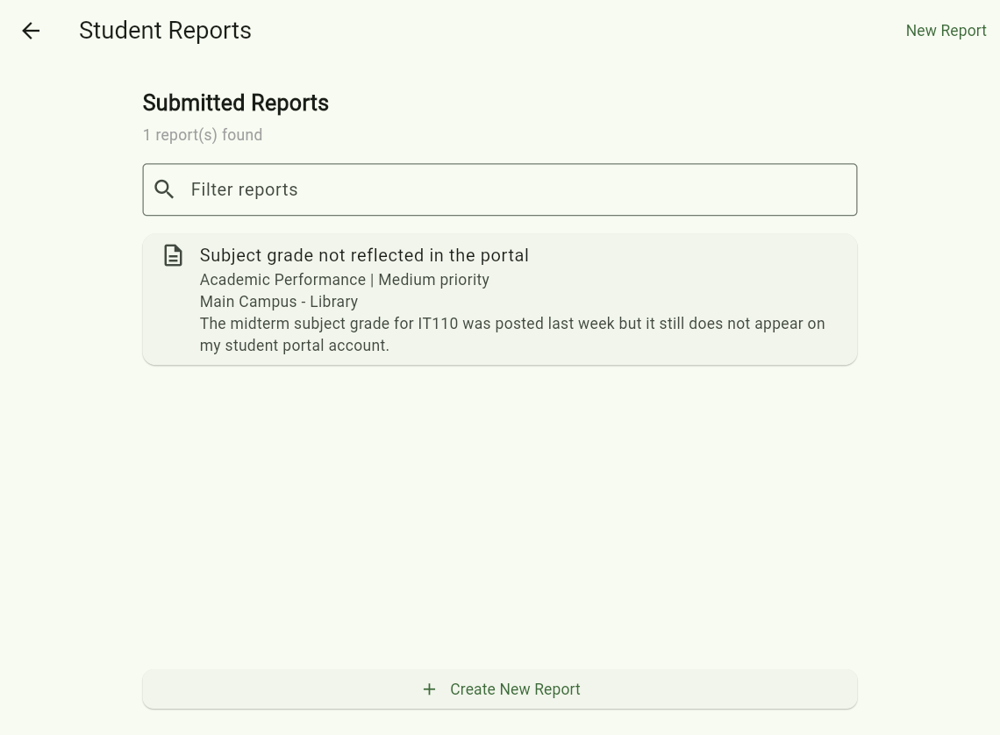
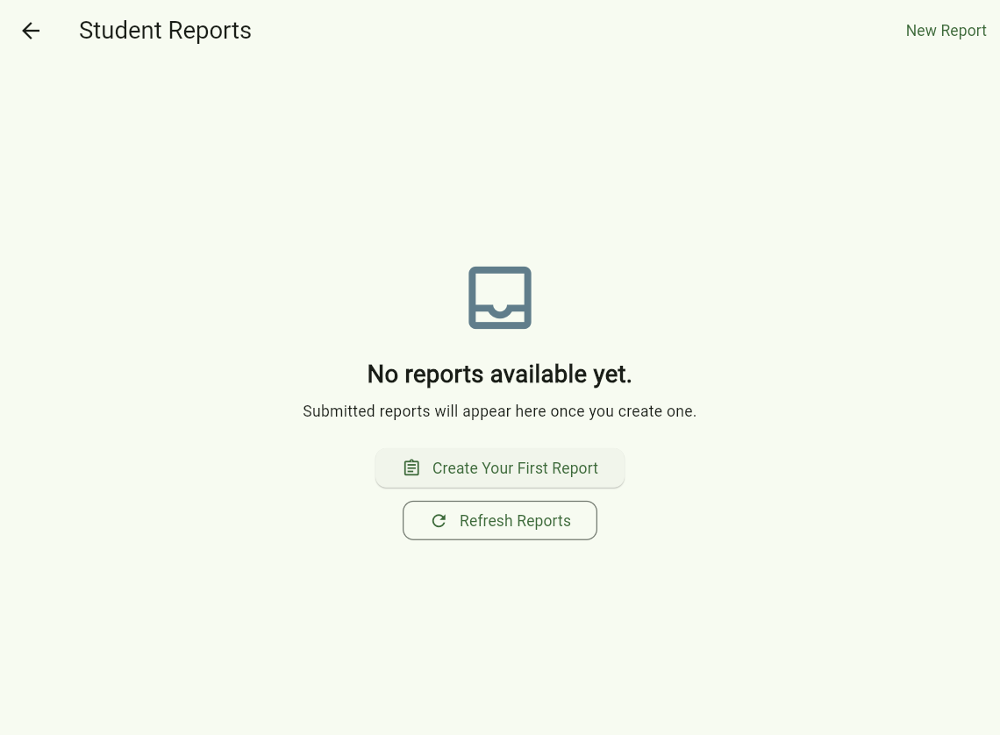

Reusable Screens, Shared Widgets, and Asynchronous UI States
Project: Student Portal (continuation of Lab Activity 8)
Activity 9 extended the existing Student Portal project instead of rebuilding it. The Activity 8
Home and Login screens were kept as they were, and a new /report route was added in
app.dart so the Report Form screen (lib/screens/report_form_screen.dart) opens
from a button on the Home screen and can be left again with the Back button. The new screen is a real
report form for the group’s approved system, with five fields (report title, category, location,
priority and description), field-level validation for every required input, and a simulated submission
whose data is stored in services/report_service.dart and modelled by
models/student_report.dart. It demonstrates the four asynchronous UI responses —
Loading, Success, Empty and Error — with a spinner and a disabled submit button while a request
is pending, a confirmation with the saved report on success, a no-data panel with a first-report action
when nothing exists yet, and a clear failure message with a working Retry. The form reuses the shared
AppButton and AppTextField widgets from lib/widgets/ in more than
one context, so the styling and behaviour stay consistent with the Activity 8 screens, and because
all data access goes through the service layer, the simulated responses can later be replaced by the real
REST API and PostgreSQL database without changing the screens.
https://github.com/ashleedotillos-pixel/semester_projectmain82e1863 — Refresh Activity 9 VS Code screenshots9511d9d — Add report form screen with loading, success, empty and error stateshttps://github.com/ashleedotillos-pixel/semester_project/commit/9511d9d
semester_project with the Activity 8
files still in place (home_screen.dart, login_screen.dart,
app_button.dart, app_text_field.dart) and the new
lib/screens/report_form_screen.dart added beside them.
AppTextField and AppButton being used inside
report_form_screen.dart, while the right editor shows the same AppButton
from lib/widgets/app_button.dart being used in the existing
home_screen.dart.



Note: all four asynchronous responses were produced by the simulated service
(Future.delayed with an in-memory list). No real database record was created, and the
screen labels every simulated response as such.